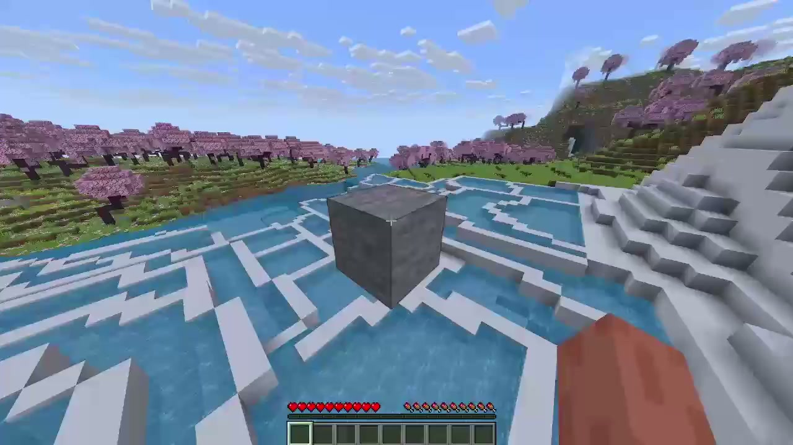

"stone in focus by aphex twin plays while it takes ten minutes to mine a stone block. completely pointless, but somewhat meditative. use at risk of being extremely calmed."
how to install
install fabric loader for minecraft 1.21.11
move stoneinfocus-1.0.0.jar into your mods folder
launch minecraft with the fabric profile